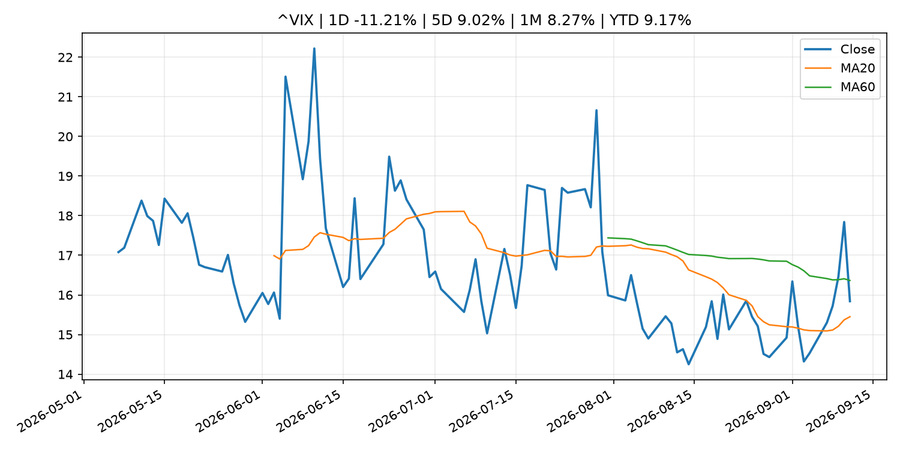
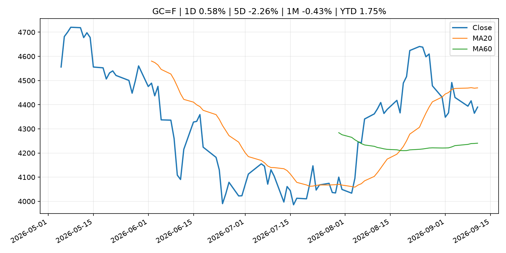
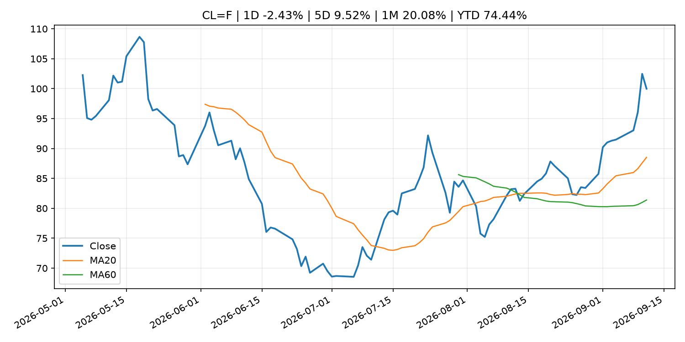
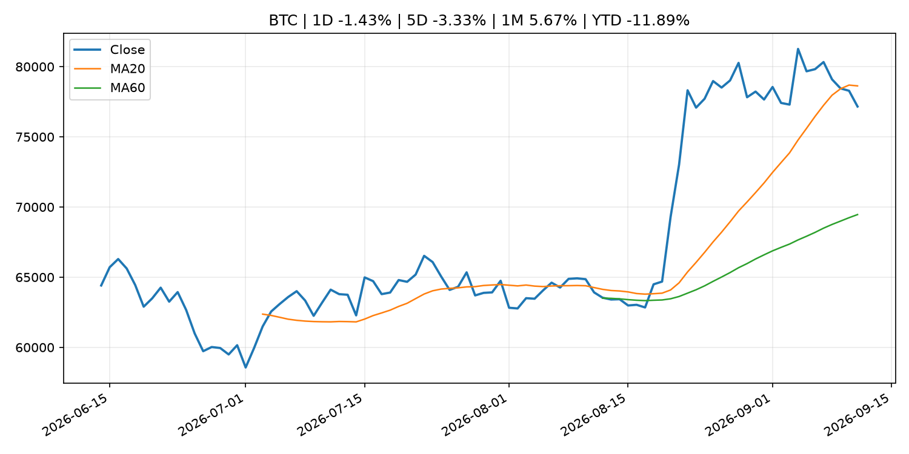
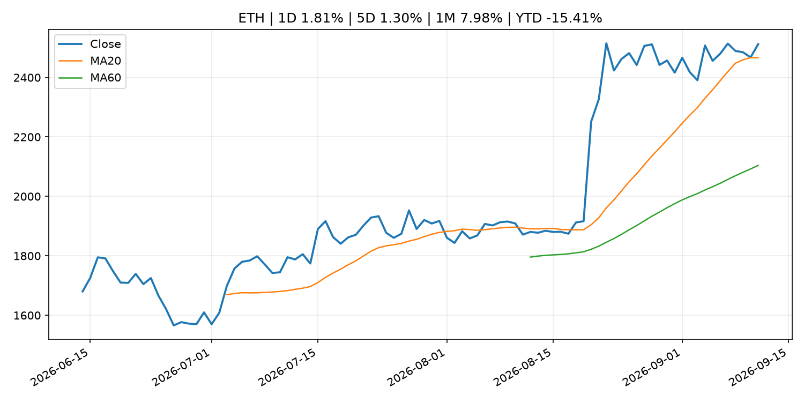
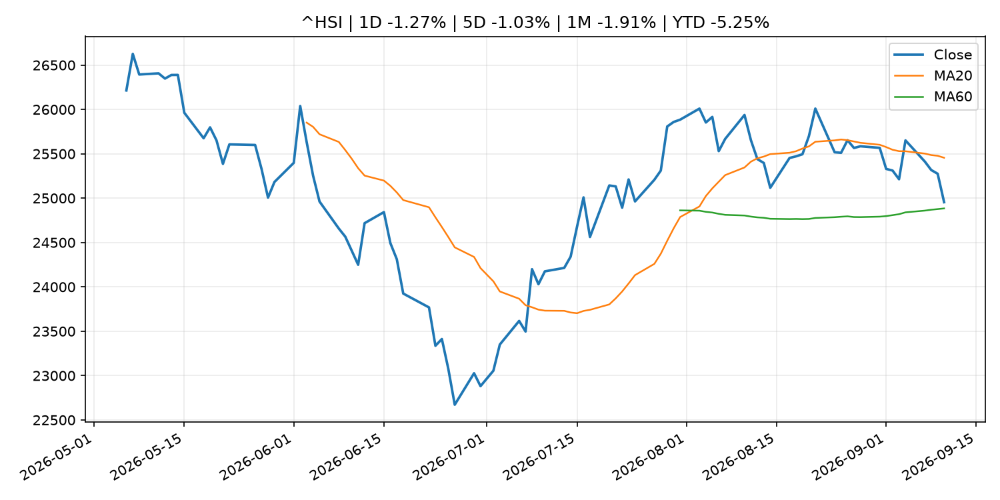

Global Macro Morning Briefing - 2026-09-12
Not financial advice / 非投资建议。
0. 今日总览
- 市场状态：risk_on。股指上涨、波动率或美元回落，市场更接近风险偏好改善。
- 今日三大主线：
- macro_data: Core CPI rose a faster-than-forecast 0.3% in August, setting up possible Fed rate hike
- central_bank_decision: With Fed rate hike all but assured, here's how markets might react
- central_bank_decision: Bitcoin below $77,000, Zcash leads losses as traders bet on a Fed rate hike
- 一句话结论：今日晨报重点关注：这类宏观数据会直接改变市场对通胀、增长和政策路径的预期。；央行决策会重定价利率、汇率、久期资产和风险资产。。跨资产方面，SPY 1D 0.85%；QQQ 1D 0.87%；^VIX 1D -11.21%；TLT 1D 0.11%；GC=F 1D 0.58%；CL=F 1D -2.43%；BTC 1D -1.43%；ETH 1D 1.81%；股指上涨、波动率或美元回落，市场更接近风险偏好改善。政策、通胀、利率、美元、美债、能源和加密监管仍是主要观察线索。所有结论仅基于公开数据与短摘要整理，不构成投资建议。
1. 隔夜跨资产市场
- 美股：SPY 1D 0.85%，QQQ 1D 0.87%，整体趋势需结合 VIX 和利率确认。
- 美债/美元：TLT 1D 0.11%，美元指数 1D 0.01%，是判断折现率压力的核心线索。
- 黄金/原油：黄金 1D 0.58%，原油 1D -2.43%，用于观察避险、通胀和地缘风险。
- 加密：BTC 1D -1.43%，ETH 1D 1.81%，关注是否独立于纳指走出加密自身行情。
- 港股/A股：恒生 1D -1.27%，沪深300/上证 1D n/a，重点看中国政策预期与人民币线索。
- 风险观察：确认风险偏好是否扩散到小盘股、信用利差和周期品。
US_EQUITY
| symbol | latest close | 1D | 5D | 1M | YTD | trend |
|---|---|---|---|---|---|---|
| SPY | 764.29 | 0.85% | -1.15% | -1.06% | 11.87% | range_bound |
| QQQ | 714.88 | 0.87% | -0.39% | -1.22% | 16.60% | range_bound |
| DIA | 525.79 | 0.97% | -2.07% | -2.11% | 8.72% | range_bound |
| IWM | 288.89 | 0.41% | -2.13% | -4.57% | 16.12% | range_bound |
| VTI | 376.31 | 0.82% | -1.21% | -1.45% | 11.89% | range_bound |
US_MACRO_MARKET
| symbol | latest close | 1D | 5D | 1M | YTD | trend |
|---|---|---|---|---|---|---|
| ^VIX | 15.84 | -11.21% | 9.02% | 8.27% | 9.17% | range_bound |
| DX-Y.NYB | 99.10 | 0.01% | 0.10% | -0.91% | 0.69% | downtrend |
| TLT | 80.87 | 0.11% | -1.46% | -1.51% | -7.08% | downtrend |
| IEF | 91.01 | -0.19% | -1.38% | -2.10% | -5.28% | downtrend |
COMMODITIES
| symbol | latest close | 1D | 5D | 1M | YTD | trend |
|---|---|---|---|---|---|---|
| GC=F | 4,390.00 | 0.58% | -2.26% | -0.43% | 1.75% | range_bound |
| SI=F | 65.02 | 1.14% | -2.92% | -0.82% | -7.85% | range_bound |
| CL=F | 99.99 | -2.43% | 9.52% | 20.08% | 74.44% | strong_uptrend |
| BZ=F | 104.42 | -2.98% | 9.32% | 17.35% | 71.88% | strong_uptrend |
| NG=F | 2.82 | -0.49% | -3.19% | 0.57% | -22.06% | downtrend |
| HG=F | 6.56 | 1.39% | -0.30% | -0.61% | 16.26% | range_bound |
HK_MARKET
| symbol | latest close | 1D | 5D | 1M | YTD | trend |
|---|---|---|---|---|---|---|
| ^HSI | 24,954.47 | -1.27% | -1.03% | -1.91% | -5.25% | range_bound |
| 0700.HK | 428.40 | 0.66% | -3.25% | -2.86% | -31.24% | downtrend |
| 9988.HK | 107.50 | 0.56% | -2.36% | -11.81% | -27.85% | range_bound |
| 3690.HK | 75.10 | 0.47% | -8.13% | -17.70% | -28.20% | strong_downtrend |
| 1810.HK | 26.36 | 1.70% | -7.31% | 1.85% | -34.56% | range_bound |
| 1211.HK | 79.85 | 0.38% | -7.31% | -9.67% | -19.14% | range_bound |
CRYPTO
| symbol | latest close | 1D | 5D | 1M | YTD | trend |
|---|---|---|---|---|---|---|
| BTC | 77,160.05 | -1.43% | -3.33% | 5.67% | -11.89% | range_bound |
| ETH | 2,512.20 | 1.81% | 1.30% | 7.98% | -15.41% | uptrend |
| SOLANA | 102.41 | 0.83% | -0.74% | 16.83% | -17.76% | uptrend |
| BINANCECOIN | 726.87 | 0.58% | -5.16% | 11.04% | -15.74% | uptrend |
| RIPPLE | 1.36 | -2.76% | -3.97% | 6.94% | -26.32% | range_bound |
2. 今日最重要的 10 条新闻
1. Core CPI rose a faster-than-forecast 0.3% in August, setting up possible Fed rate hike
- 来源：CoinDesk
- 时间：2026-09-11T12:32:25+00:00
- 地区：global
- 事件类型：macro_data
- 重要性层级：Tier 1
- 一句话摘要：Core CPI rose a faster-than-forecast 0.3% in August, setting up possible Fed rate hike
- 为什么重要：这类宏观数据会直接改变市场对通胀、增长和政策路径的预期。
- 可能影响：主要影响 DXY，方向为 positive，强度 high；通胀压力可能推高政策利率预期并支撑美元。
- 资产：DXY 方向：positive 强度：high 原因：通胀压力可能推高政策利率预期并支撑美元。
- 资产：TLT 方向：negative 强度：high 原因：通胀上行通常推升收益率、压低长债价格。
- 资产：QQQ 方向：negative 强度：high 原因：更高利率对成长股估值折现率不利。
- 资产：SPY 方向：mixed 强度：medium 原因：名义增长可能支撑收入，但更高利率压制估值。
- 资产：GC=F 方向：mixed 强度：medium 原因：通胀对黄金是支撑，但实际利率上行会形成压力。
- 资产：BTC 方向：negative 强度：high 原因：流动性收紧通常压制高 beta 加密资产。
- 原文链接：https://www.coindesk.com/markets/2026/09/11/core-cpi-rose-a-faster-than-forecast-0-3-in-august-setting-up-fed-rate-hike
2. With Fed rate hike all but assured, here's how markets might react
- 来源：CoinDesk
- 时间：2026-09-11T15:45:56+00:00
- 地区：global
- 事件类型：central_bank_decision
- 重要性层级：Tier 1
- 一句话摘要：With Fed rate hike all but assured, here's how markets might react
- 为什么重要：央行决策会重定价利率、汇率、久期资产和风险资产。
- 可能影响：主要影响 QQQ，方向为 negative，强度 high；鹰派政策提高折现率，压制成长股估值。
- 资产：QQQ 方向：negative 强度：high 原因：鹰派政策提高折现率，压制成长股估值。
- 资产：SPY 方向：negative 强度：medium 原因：更紧政策通常削弱风险偏好。
- 资产：TLT 方向：negative 强度：high 原因：利率上行通常压低长债价格。
- 资产：DXY 方向：positive 强度：high 原因：更高利率预期通常支撑美元。
- 资产：BTC 方向：negative 强度：high 原因：流动性收紧通常压制高 beta 加密资产。
- 原文链接：https://www.coindesk.com/markets/2026/09/11/hotter-cpi-complicates-fed-hold-as-warsh-s-preferred-inflation-gauge-tells-different-story
3. Bitcoin below $77,000, Zcash leads losses as traders bet on a Fed rate hike
- 来源：CoinDesk
- 时间：2026-09-11T04:46:15+00:00
- 地区：global
- 事件类型：central_bank_decision
- 重要性层级：Tier 1
- 一句话摘要：Bitcoin below $77,000, Zcash leads losses as traders bet on a Fed rate hike
- 为什么重要：央行决策会重定价利率、汇率、久期资产和风险资产。
- 可能影响：主要影响 QQQ，方向为 negative，强度 high；鹰派政策提高折现率，压制成长股估值。
- 资产：QQQ 方向：negative 强度：high 原因：鹰派政策提高折现率，压制成长股估值。
- 资产：SPY 方向：negative 强度：medium 原因：更紧政策通常削弱风险偏好。
- 资产：TLT 方向：negative 强度：high 原因：利率上行通常压低长债价格。
- 资产：DXY 方向：positive 强度：high 原因：更高利率预期通常支撑美元。
- 资产：BTC 方向：negative 强度：high 原因：流动性收紧通常压制高 beta 加密资产。
- 原文链接：https://www.coindesk.com/markets/2026/09/11/bitcoin-below-usd77-000-zcash-leads-losses-as-traders-bet-on-a-fed-rate-hike
4. SEC Charges Founder and His Two New Jersey-Based Companies in Alleged $16 Million Ponzi Scheme
- 来源：SEC Press Releases
- 时间：2026-09-10T13:45:22-04:00
- 地区：US
- 事件类型：regulation
- 重要性层级：Tier 2
- 一句话摘要：The Securities and Exchange Commission today charged Ernest Ossei Boateng and two New Jersey-based companies he controls, Intercontinental Wealth Network LLC and I Wealth Network LP, for allegedly raising approximately $16 million from more than 200…
- 为什么重要：监管变化会改变行业盈利预期和资产风险溢价。
- 可能影响：主要影响 BTC，方向为 mixed，强度 high；加密监管或 ETF 进展会改变 BTC 的资金流和风险溢价。
- 资产：BTC 方向：mixed 强度：high 原因：加密监管或 ETF 进展会改变 BTC 的资金流和风险溢价。
- 资产：ETH 方向：mixed 强度：high 原因：监管框架会影响 ETH 产品化和机构参与度。
- 资产：COIN 方向：mixed 强度：medium 原因：监管清晰度和执法风险会影响交易平台估值。
- 资产：crypto market 方向：mixed 强度：high 原因：信息影响整个加密市场结构，但方向取决于细节。
- 原文链接：https://www.sec.gov/newsroom/press-releases/2026-86-sec-charges-founder-his-two-new-jersey-based-companies-alleged-16-million-ponzi-scheme
5. Why a new SEC plan could ease a legal headache for tokenized securities
- 来源：CoinDesk
- 时间：2026-09-10T19:01:30+00:00
- 地区：global
- 事件类型：regulation
- 重要性层级：Tier 2
- 一句话摘要：Why a new SEC plan could ease a legal headache for tokenized securities
- 为什么重要：监管变化会改变行业盈利预期和资产风险溢价。
- 可能影响：主要影响 BTC，方向为 mixed，强度 high；加密监管或 ETF 进展会改变 BTC 的资金流和风险溢价。
- 资产：BTC 方向：mixed 强度：high 原因：加密监管或 ETF 进展会改变 BTC 的资金流和风险溢价。
- 资产：ETH 方向：mixed 强度：high 原因：监管框架会影响 ETH 产品化和机构参与度。
- 资产：COIN 方向：mixed 强度：medium 原因：监管清晰度和执法风险会影响交易平台估值。
- 资产：crypto market 方向：mixed 强度：high 原因：信息影响整个加密市场结构，但方向取决于细节。
- 原文链接：https://www.coindesk.com/business/2026/09/10/why-a-new-sec-plan-could-end-the-legal-headaches-of-holding-tokenized-securities
6. MoneyGram unveils stablecoin-backed card as digital dollars move into everyday spending
- 来源：CoinDesk
- 时间：2026-09-10T14:30:00+00:00
- 地区：global
- 事件类型：crypto_market_structure
- 重要性层级：Tier 2
- 一句话摘要：MoneyGram unveils stablecoin-backed card as digital dollars move into everyday spending
- 为什么重要：加密市场结构和监管变化会影响 BTC、ETH 及相关股票的风险溢价。
- 可能影响：主要影响 BTC，方向为 mixed，强度 high；加密监管或 ETF 进展会改变 BTC 的资金流和风险溢价。
- 资产：BTC 方向：mixed 强度：high 原因：加密监管或 ETF 进展会改变 BTC 的资金流和风险溢价。
- 资产：ETH 方向：mixed 强度：high 原因：监管框架会影响 ETH 产品化和机构参与度。
- 资产：COIN 方向：mixed 强度：medium 原因：监管清晰度和执法风险会影响交易平台估值。
- 资产：crypto market 方向：mixed 强度：high 原因：信息影响整个加密市场结构，但方向取决于细节。
- 原文链接：https://www.coindesk.com/business/2026/09/08/moneygram-unveils-stablecoin-backed-card-as-digital-dollars-move-into-everyday-spending
7. Agencies seek comment on proposed third-party risk management guidance and issue statement on community bank engagement with core service providers
- 来源：Federal Reserve Press Releases
- 时间：2026-09-11T14:00:00+00:00
- 地区：US
- 事件类型：earnings
- 重要性层级：Tier 2
- 一句话摘要：Agencies seek comment on proposed third-party risk management guidance and issue statement on community bank engagement with core service providers
- 为什么重要：大型科技股盈利和资本开支会影响纳指、半导体和 AI 交易主线。
- 可能影响：可能影响利率、汇率、风险资产或大宗商品预期，但当前公开信息不足以判断明确方向。
- 资产：暂无明确资产映射
- 方向：unknown
- 强度：low
- 原因：公开信息不足以判断方向。
- 原文链接：https://www.federalreserve.gov/newsevents/pressreleases/bcreg20260911a.htm
8. Oracle shook off fears about AI spending, but its stock still loses ground
- 来源：MarketWatch Top Stories
- 时间：2026-09-11T20:45:00+00:00
- 地区：US
- 事件类型：earnings
- 重要性层级：Tier 2
- 一句话摘要：“Several of Oracle’s bear cases were addressed head on” in the latest earnings report, according to an analyst.
- 为什么重要：大型科技股盈利和资本开支会影响纳指、半导体和 AI 交易主线。
- 可能影响：可能影响利率、汇率、风险资产或大宗商品预期，但当前公开信息不足以判断明确方向。
- 资产：暂无明确资产映射
- 方向：unknown
- 强度：low
- 原因：公开信息不足以判断方向。
- 原文链接：https://www.marketwatch.com/story/oracle-shares-are-climbing-after-results-what-wall-street-analysts-are-saying-now-0d4517ae?mod=mw_rss_topstories
9. Why Dell and HPE were the S&P 500’s top-performing stocks today
- 来源：MarketWatch Top Stories
- 时间：2026-09-11T20:30:00+00:00
- 地区：US
- 事件类型：earnings
- 重要性层级：Tier 2
- 一句话摘要：Oracle’s earnings provided an upbeat read for hardware suppliers — but the Fed’s interest-rate moves could dictate just how much they continue benefitting.
- 为什么重要：大型科技股盈利和资本开支会影响纳指、半导体和 AI 交易主线。
- 可能影响：可能影响利率、汇率、风险资产或大宗商品预期，但当前公开信息不足以判断明确方向。
- 资产：暂无明确资产映射
- 方向：unknown
- 强度：low
- 原因：公开信息不足以判断方向。
- 原文链接：https://www.marketwatch.com/story/why-dell-and-hpe-were-the-s-p-500s-top-performing-stocks-today-13d1dd14?mod=mw_rss_topstories
10. Kalshi launches ‘perps’ for gold and silver following CFTC approval, expanding futures offerings
- 来源：CNBC Economy
- 时间：2026-09-10T14:00:11+00:00
- 地区：US
- 事件类型：regulation
- 重要性层级：Tier 2
- 一句话摘要：Its the latest move by the prediction market company to diversify its assets users can trade.
- 为什么重要：监管变化会改变行业盈利预期和资产风险溢价。
- 可能影响：可能影响利率、汇率、风险资产或大宗商品预期，但当前公开信息不足以判断明确方向。
- 资产：暂无明确资产映射
- 方向：unknown
- 强度：low
- 原因：公开信息不足以判断方向。
- 原文链接：https://www.cnbc.com/2026/09/10/kalshi-launches-perps-for-gold-and-silver-following-cftc-approval-expanding-futures-offerings.html
3. 政策与央行观察
1. With Fed rate hike all but assured, here's how markets might react
- 来源：CoinDesk
- 时间：2026-09-11T15:45:56+00:00
- 地区：global
- 事件类型：central_bank_decision
- 重要性层级：Tier 1
- 一句话摘要：With Fed rate hike all but assured, here's how markets might react
- 为什么重要：央行决策会重定价利率、汇率、久期资产和风险资产。
- 可能影响：主要影响 QQQ，方向为 negative，强度 high；鹰派政策提高折现率，压制成长股估值。
- 资产：QQQ 方向：negative 强度：high 原因：鹰派政策提高折现率，压制成长股估值。
- 资产：SPY 方向：negative 强度：medium 原因：更紧政策通常削弱风险偏好。
- 资产：TLT 方向：negative 强度：high 原因：利率上行通常压低长债价格。
- 资产：DXY 方向：positive 强度：high 原因：更高利率预期通常支撑美元。
- 资产：BTC 方向：negative 强度：high 原因：流动性收紧通常压制高 beta 加密资产。
- 原文链接：https://www.coindesk.com/markets/2026/09/11/hotter-cpi-complicates-fed-hold-as-warsh-s-preferred-inflation-gauge-tells-different-story
2. Bitcoin below $77,000, Zcash leads losses as traders bet on a Fed rate hike
- 来源：CoinDesk
- 时间：2026-09-11T04:46:15+00:00
- 地区：global
- 事件类型：central_bank_decision
- 重要性层级：Tier 1
- 一句话摘要：Bitcoin below $77,000, Zcash leads losses as traders bet on a Fed rate hike
- 为什么重要：央行决策会重定价利率、汇率、久期资产和风险资产。
- 可能影响：主要影响 QQQ，方向为 negative，强度 high；鹰派政策提高折现率，压制成长股估值。
- 资产：QQQ 方向：negative 强度：high 原因：鹰派政策提高折现率，压制成长股估值。
- 资产：SPY 方向：negative 强度：medium 原因：更紧政策通常削弱风险偏好。
- 资产：TLT 方向：negative 强度：high 原因：利率上行通常压低长债价格。
- 资产：DXY 方向：positive 强度：high 原因：更高利率预期通常支撑美元。
- 资产：BTC 方向：negative 强度：high 原因：流动性收紧通常压制高 beta 加密资产。
- 原文链接：https://www.coindesk.com/markets/2026/09/11/bitcoin-below-usd77-000-zcash-leads-losses-as-traders-bet-on-a-fed-rate-hike
3. SEC Charges Founder and His Two New Jersey-Based Companies in Alleged $16 Million Ponzi Scheme
- 来源：SEC Press Releases
- 时间：2026-09-10T13:45:22-04:00
- 地区：US
- 事件类型：regulation
- 重要性层级：Tier 2
- 一句话摘要：The Securities and Exchange Commission today charged Ernest Ossei Boateng and two New Jersey-based companies he controls, Intercontinental Wealth Network LLC and I Wealth Network LP, for allegedly raising approximately $16 million from more than 200…
- 为什么重要：监管变化会改变行业盈利预期和资产风险溢价。
- 可能影响：主要影响 BTC，方向为 mixed，强度 high；加密监管或 ETF 进展会改变 BTC 的资金流和风险溢价。
- 资产：BTC 方向：mixed 强度：high 原因：加密监管或 ETF 进展会改变 BTC 的资金流和风险溢价。
- 资产：ETH 方向：mixed 强度：high 原因：监管框架会影响 ETH 产品化和机构参与度。
- 资产：COIN 方向：mixed 强度：medium 原因：监管清晰度和执法风险会影响交易平台估值。
- 资产：crypto market 方向：mixed 强度：high 原因：信息影响整个加密市场结构，但方向取决于细节。
- 原文链接：https://www.sec.gov/newsroom/press-releases/2026-86-sec-charges-founder-his-two-new-jersey-based-companies-alleged-16-million-ponzi-scheme
4. Why a new SEC plan could ease a legal headache for tokenized securities
- 来源：CoinDesk
- 时间：2026-09-10T19:01:30+00:00
- 地区：global
- 事件类型：regulation
- 重要性层级：Tier 2
- 一句话摘要：Why a new SEC plan could ease a legal headache for tokenized securities
- 为什么重要：监管变化会改变行业盈利预期和资产风险溢价。
- 可能影响：主要影响 BTC，方向为 mixed，强度 high；加密监管或 ETF 进展会改变 BTC 的资金流和风险溢价。
- 资产：BTC 方向：mixed 强度：high 原因：加密监管或 ETF 进展会改变 BTC 的资金流和风险溢价。
- 资产：ETH 方向：mixed 强度：high 原因：监管框架会影响 ETH 产品化和机构参与度。
- 资产：COIN 方向：mixed 强度：medium 原因：监管清晰度和执法风险会影响交易平台估值。
- 资产：crypto market 方向：mixed 强度：high 原因：信息影响整个加密市场结构，但方向取决于细节。
- 原文链接：https://www.coindesk.com/business/2026/09/10/why-a-new-sec-plan-could-end-the-legal-headaches-of-holding-tokenized-securities
5. MoneyGram unveils stablecoin-backed card as digital dollars move into everyday spending
- 来源：CoinDesk
- 时间：2026-09-10T14:30:00+00:00
- 地区：global
- 事件类型：crypto_market_structure
- 重要性层级：Tier 2
- 一句话摘要：MoneyGram unveils stablecoin-backed card as digital dollars move into everyday spending
- 为什么重要：加密市场结构和监管变化会影响 BTC、ETH 及相关股票的风险溢价。
- 可能影响：主要影响 BTC，方向为 mixed，强度 high；加密监管或 ETF 进展会改变 BTC 的资金流和风险溢价。
- 资产：BTC 方向：mixed 强度：high 原因：加密监管或 ETF 进展会改变 BTC 的资金流和风险溢价。
- 资产：ETH 方向：mixed 强度：high 原因：监管框架会影响 ETH 产品化和机构参与度。
- 资产：COIN 方向：mixed 强度：medium 原因：监管清晰度和执法风险会影响交易平台估值。
- 资产：crypto market 方向：mixed 强度：high 原因：信息影响整个加密市场结构，但方向取决于细节。
- 原文链接：https://www.coindesk.com/business/2026/09/08/moneygram-unveils-stablecoin-backed-card-as-digital-dollars-move-into-everyday-spending
6. Kalshi launches ‘perps’ for gold and silver following CFTC approval, expanding futures offerings
- 来源：CNBC Economy
- 时间：2026-09-10T14:00:11+00:00
- 地区：US
- 事件类型：regulation
- 重要性层级：Tier 2
- 一句话摘要：Its the latest move by the prediction market company to diversify its assets users can trade.
- 为什么重要：监管变化会改变行业盈利预期和资产风险溢价。
- 可能影响：可能影响利率、汇率、风险资产或大宗商品预期，但当前公开信息不足以判断明确方向。
- 资产：暂无明确资产映射
- 方向：unknown
- 强度：low
- 原因：公开信息不足以判断方向。
- 原文链接：https://www.cnbc.com/2026/09/10/kalshi-launches-perps-for-gold-and-silver-following-cftc-approval-expanding-futures-offerings.html
7. Speech by Board Member MASU in Fukui (Economic Activity, Prices, and Monetary Policy in Japan)
- 来源：Bank of Japan Announcements
- 时间：2026-09-10T10:30:00+09:00
- 地区：Japan
- 事件类型：central_bank_speech
- 重要性层级：Tier 2
- 一句话摘要：Speech by Board Member MASU in Fukui (Economic Activity, Prices, and Monetary Policy in Japan)
- 为什么重要：央行官员表态可能影响市场对下一次会议的定价。
- 可能影响：可能影响利率、汇率、风险资产或大宗商品预期，但当前公开信息不足以判断明确方向。
- 资产：暂无明确资产映射
- 方向：unknown
- 强度：low
- 原因：公开信息不足以判断方向。
- 原文链接：http://www.boj.or.jp/en/about/press/koen_2026/ko260910a.htm
4. 市场异动与图表
- SPY 上涨 0.85%
- QQQ 上涨 0.87%
- VIX 下跌 -11.21%
- Gold 上涨 0.58%
- Oil 下跌 -2.43%
SPY

QQQ

^VIX

TLT

GC=F

CL=F

BTC

ETH

^HSI

5. 华尔街与机构公开观点
- 暂无可靠公开观点。
6. 今日重点关注
- 经济数据：经济数据：暂无可靠公开日历数据；如配置经济日历源后可自动填充。
- 央行讲话：央行讲话：暂无可靠公开日历数据；重点跟踪 Fed、ECB、BoJ、PBOC 官网 RSS。
- 财报：财报：暂无可靠数据。
- 政策事件：政策事件：暂无可靠数据。
- 风险提醒：风险提醒：关注数据源失败项、突发地缘风险、利率和美元的二阶反应。
7. 英文金融表达与宏观概念
- inflation expectations：通胀预期，指家庭、企业或市场对未来通胀的预估。 例句：Inflation expectations can shape wage bargaining and bond yields.
- real yield：实际收益率，名义利率扣除通胀预期后的收益率。 例句：Gold often reacts more to real yields than nominal yields.
- terminal rate：终端利率，市场预期本轮加息周期的最高政策利率。 例句：A higher terminal rate can pressure growth stocks.
- risk-off：避险模式，资金偏向美元、国债、黄金等防御资产。 例句：A geopolitical shock can push markets into risk-off mode.
- market structure：市场结构，指交易、托管、清算、ETF、监管等制度安排。 例句：Crypto market structure rules can affect institutional participation.
- soft landing：软着陆，指通胀回落而经济避免明显衰退。 例句：Markets often rally when data support a soft landing.
8. 背景材料
- Your Social Security COLA could go up another $71 a month in 2027. That’s not necessarily good news.（MarketWatch Top Stories，other）：A higher COLA is a sign that persistent inflation isn’t going anywhere.
- Philip R. Lane: Outlook for the euro area economy（ECB Press Releases，other）：Philip R. Lane: Outlook for the euro area economy
- Joint Readout of Principals’ Meeting of U.S. and UK Authorities Regarding Central Counterparty Resolution（SEC Press Releases，other）：Senior officials from the Securities and Exchange Commission, Federal Deposit Insurance Corporation, Commodity Futures Trading Commission, Federal Reserve Board, and Bank of England convened for a tabletop exercise on Sept. 3, 2026, to discuss certain…
- Rising yields, oil prices leave bitcoin vulnerable ahead of U.S. inflation report（CoinDesk，other）：Rising yields, oil prices leave bitcoin vulnerable ahead of U.S. inflation report
- Live updates: Bitcoin gives up early gains, with markets moving to price in multiple rate hikes（CoinDesk，other）：Live updates: Bitcoin gives up early gains, with markets moving to price in multiple rate hikes
- Bitcoin recovers toward $77,300 as zcash leverage unwinds（CoinDesk，other）：Bitcoin recovers toward $77,300 as zcash leverage unwinds
- Bitcoin pulls back as another golden cross fails to deliver（CoinDesk，other）：Bitcoin pulls back as another golden cross fails to deliver
- Ripple puts AI agents inside its $1 billion corporate treasury bet（CoinDesk，other）：Ripple puts AI agents inside its $1 billion corporate treasury bet
- Central Bank Digital Currency Experiments: Progress Report on the Pilot Program (June 2026)（Bank of Japan Announcements，other）：Central Bank Digital Currency Experiments: Progress Report on the Pilot Program (June 2026)
- Sixth General Meeting of the CBDC Forum（Bank of Japan Announcements，other）：Sixth General Meeting of the CBDC Forum
- Corporate Goods Price Index (Aug.)（Bank of Japan Announcements，other）：Corporate Goods Price Index (Aug.)
- Agencies reduce regulatory burden for community banks, increase eligibility for 18-month exam cycle（Federal Reserve Press Releases，other）：Agencies reduce regulatory burden for community banks, increase eligibility for 18-month exam cycle
- Bitcoin Bancorp snaps up thousands of defunct Bitcoin Depot ATMs for $620,000（CoinDesk，other）：Bitcoin Bancorp snaps up thousands of defunct Bitcoin Depot ATMs for $620,000
- Christine Lagarde, Boris Vujčić: Monetary policy statement (with Q&A)（ECB Press Releases，other）：Christine Lagarde, Boris Vujčić: Monetary policy statement (with Q&A)
- Monetary policy decisions（ECB Press Releases，other）：Monetary policy decisions
- Basic Figures on Fails (Aug.)（Bank of Japan Announcements，other）：Basic Figures on Fails (Aug.)
9. 数据源、失败项与免责声明
- 采集时间：2026-09-11T23:54:04
- 数据源：公开 RSS、Yahoo Finance、CoinGecko、AKShare、FRED、SEC data.sec.gov，以及用户自有 inputs/reports 文件。
- 合规说明：不绕过 WSJ、Bloomberg、FT、Reuters 等付费墙；对付费媒体只使用公开 RSS 标题、摘要、链接和发布时间。
- 免责声明：Not financial advice / 非投资建议。本项目仅供个人学习、研究和信息整理，不构成投资建议、交易建议或任何收益承诺。
- 失败或跳过的数据源：
- crypto data failed coin=dogecoin
- China market data failed symbol=上证指数: empty dataframe
- China market data failed symbol=深证成指: empty dataframe
- China market data failed symbol=创业板指: empty dataframe
- China market data failed symbol=沪深300: empty dataframe
- China market data failed symbol=中证500: empty dataframe
- China market data failed symbol=科创50: empty dataframe
- FRED_API_KEY not set; skipping FRED macro series
- SEC failed cik=0000320193
- SEC failed cik=0000789019
- SEC failed cik=0001045810
- SEC failed cik=0001318605
- SEC failed cik=0001577552